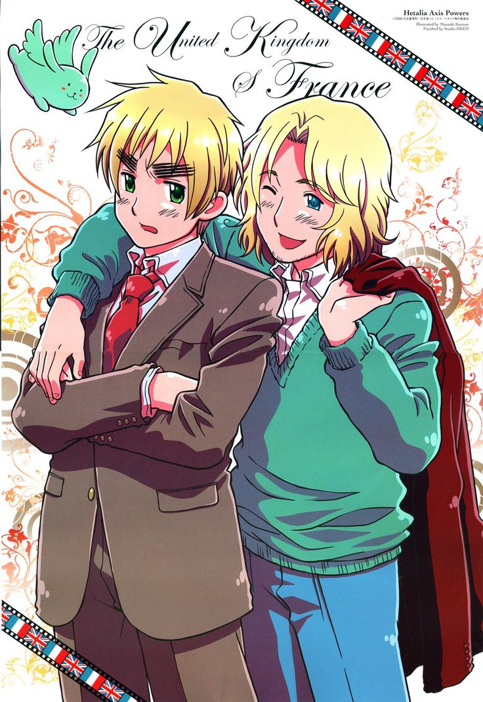
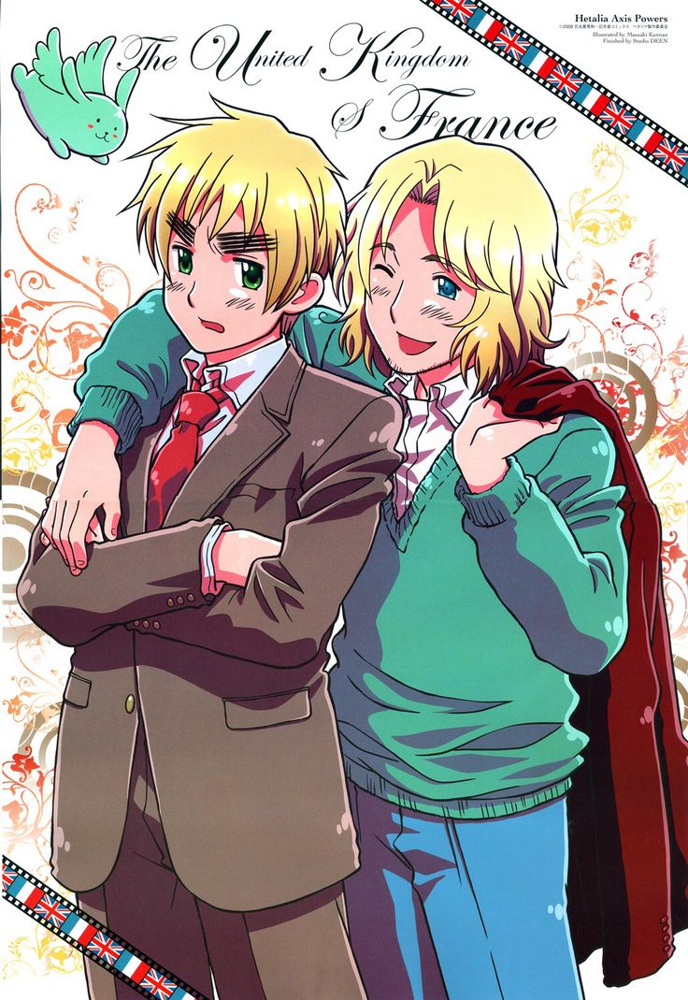
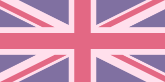
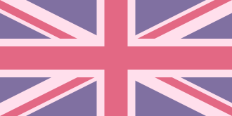

WHAT IS HETALIA?
Hetalia: Axis Powers (ヘタリア Axis Powers) is a based off a Japanese Webcomic/Manga written and illustrated by Hidekaz Himaruya. It was adapted by Studio Deen and is a 7-season dark humour anime that ran from 2009 to 2021. This anime is about the personification of countries (basically if countries were people), retelling historical events and comparing countries with each other in a comedic and light-hearted manner. .

The title 'Hetalia' is a combination of the Japanese word for 'useless' (ヘタレ) and the word for 'Italy' (イタリア.) This joke is derived from how Italy was well known for being considered 'ineffective' and 'useless' during World War II. 'Axis Powers' in the title simply refers to the Axis Powers, which are Germany, Italy, and Japan. (Not really associated with any certain PEOPLE. Only the countries.)
The characters, as I mentioned said earlier, are personified countries- The main 8 characters consisting of the Axis Powers and the Allies. The main 8 include: Italy, Germany, Japan, England, France, America, Russia, and China. Their personalities are based off on both positive and negative cultural stereotypes.
Hetalia not only has 7 seasons, but also has a famous film (Paint it White), many character songs, successful musicals, drama cds, and maybe even more. The 7 seasons take on different titles, but the most used ones are Axis Powers and World Stars.
Seasons in order:
Hetalia: Axis Powers (S1-S2)
Hetalia: World Series (S3-S4)
Hetalia: The Beautiful World (S5)
Hetalia: The World Twinkle (S6)
Hetalia: World Stars (S7)
Hetalia: Axis Powers (S1-S2)
Hetalia: World Series (S3-S4)
Hetalia: The Beautiful World (S5)
Hetalia: The World Twinkle (S6)
Hetalia: World Stars (S7)
This series has gained millions of fans world-wide and was one of the most popular animes during the early 2010's. The fanbase is well known for being passionate and... a bit... crazy while dominating the anime community back then. Unfortunately, the current fanbase isn't as massive like how it was in the past. Probably because of Hetalia's controversial and 'racist' aspects that don't hold up well today.
 
